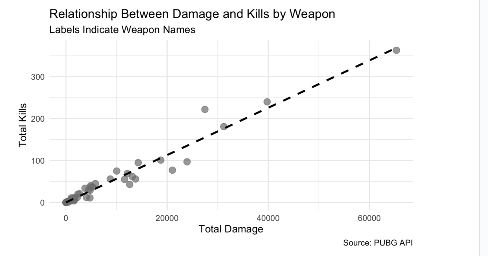
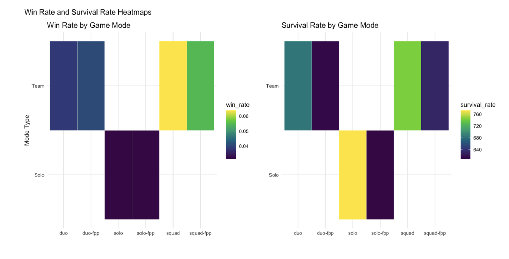
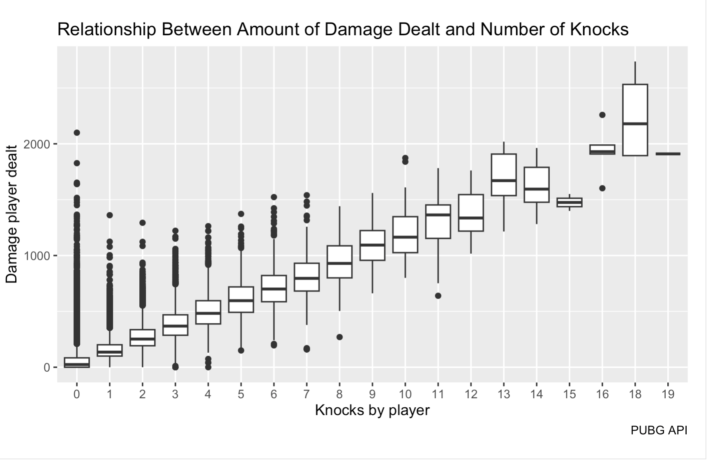

Milestone3
Importance of topic
For PUBG players or those interested in becoming one, such as our group, it is helpful to have statistical data for strategic game play.
We have 3 broad questions that serve the topics of player performance analysis, weapon mastery analysis, and hot drop analysis. These three areas of game play can provide a more comprehensive understanding of the gaming dynamics and mechanics, improving the overall experience for a player.
A visual analysis of performance and preference can assist in creating a more personalized and engaging experience for players by allowing developers to refine game mechanics, ensuring fairness, competitiveness, and satisfaction across the various modes. Also, insights into hot drop zones and weapon mastery, for instance, can help ensure balanced resource allocation and gameplay dynamics.
Moreover, players are more likely to remain engaged when they see tangible opportunities and improvements for growth. Developers may be able to anticipate and address player needs with shared strategies, meta-analysis, and cultural elements like popular landing zones derived from the data visuals.
The overall growing popularity of esports and competitive gaming, understanding player success predictors, optimal strategies for different modes, and popular battlegrounds can provide teams and players with critical strategic advantages. It also enhances the viewing experience by spotlighting key action areas and emergent gameplay trends.
Rationale of narrowing the scope of our questions
PUBG is a survival game and therefore, a dive deep into how long into a match a player survived, or more importantly, what actions they took to survive near the end of the match, will hopefully shed light on a specific set of skills or strategies a new player can apply to avoid being eliminated for as long as possible. This resonates deeply with our third question where it asks about the most typical behaviors among players. Specifically, a thorough analysis of whether or not these behaviors can help lengthen a player’s survival time can help us come up with some visualizations that show the relationship between survival time and some factor(s) that contribute(s) negatively/positively to overall game performance.
Lifetime statistics give us an overview of the player’s performances over the course of their PUBG career. An analysis of this data would be critical in helping the game developers understand how well people are doing on different aspects of the game i.e. game modes and thereby informing any improvements that could be made to enhance the gaming experience but also retain players. This is why one of our broad questions focuses on drawing insights from this data concentrating mainly on performances of the players across different game modes.
Finally, the weapon mastery allows players to observe a preferred game-play throughout the population. It could give an insight into which weapons tend to yield good game play and vice versa. The weapons endpoint analysis may also guide new players choices when starting out in the game. It is a subset of many other endpoints that are beneficial for gameplay, with the main purpose being tool uses.
Plots/Modeling output & Connection to our questions

This visualization generally shows whether total kills and damage rates have any type of relationship per each weapon, for a single sample player. From the above plot, we can see that they have a moderately strong positive correlation.
This suggests that higher damage with a weapon is often associated with a higher kill count, indicating that weapon effectiveness could be a stronger predictor of a player’s success. By incorporating mastery levels and playstyle, you could refine predictive models for kill counts, win probabilities, and survival times. Furthermore, this data can also be expanded by stratifying it by game modes (solo, duo, squad). For instance, it would help identify whether the correlation between damage and kills is stronger in team modes (where players may rely on coordinated attacks) versus solo modes. This might reveal differences in weapon mastery and playstyle effectiveness across modes.
While this chart does not directly relate to hot-drop behaviors, a similar analysis could be conducted to compare damage and kills across different landing zones to identify high-risk, high-reward areas and their impact on player performance.
This chart’s insights could form the basis of a broader analysis addressing these questions by integrating additional variables like game modes, location data, and historical trends.

This visualization explores how well players perform across different game modes, classified into two main categories: Solo Play and Team Play. The first heatmap shows win rates, while the second focuses on survival rates.
From the heatmap, we observe that win rates are generally higher for team-based play compared to solo play. This suggests that players benefit from teamwork, which likely enhances coordination and overall performance, leading to more frequent victories.
However, when it comes to survival rates—a measure of how long players last before being killed—we notice a different trend. Players in solo modes tend to have comparable or even slightly better survival rates in some cases. This could indicate that in solo modes, players adopt a more cautious or defensive playstyle, focusing on surviving as long as possible without relying on team support. Conversely, team play may encourage more aggressive strategies, where players take risks knowing they have teammates to back them up.
These patterns highlight the trade-offs between the two categories: team play offers better odds of winning, while solo play may encourage more strategic survival.

This visualization is a boxplot that shows a positive relationship between the amount of damage a player dealt and the number of knocks they made, which makes sense because a large damage has to be made in order to get another player knocked.
For context, when a player is hit and runs out of their current HP, they are knocked. During this time, they are incapable of performing any activities other than crawling on the ground and waiting for their teammate to come and revive them. If no one comes and the countdown finishes, the player will be officially eliminated.
We hypothesize that a greater number of knocks mean a player is confident in his skills and is more likely to participate in combats, or even becomes proactive in hunting down their enemies. This can go both ways. If someone has a tendency to participate in combats, they have a higher likelihood to be hit and eliminated or, in contrast, because they are skilful and can instead eliminate most other players, they are more likely to make one of the top spots. Another possibility is that if someone refrains from combat and hides themselves really well, it is probable they make it deep into the match. For this reason, a further comparison between survival time and number of knocks can tell us which of these possibilities is more likely to happen, or it will be different depending on game mode.
Main Takeaways
With our data story-telling project, we aim to better understand and share the “guide” in how to play PUBG more efficiently, if ranking is of the player’s goal. Players may find more success in leveling up in certain game modes, and having the knowledge of all the weapons in the game in an easy to read break-down may be incredibly helpful.
Limitations & Ethical considerations
Blind people can’t see the charts
Charts are colorblind people friendly
The nature of the game involves violence and gun use, therefore in our visualizations, we will try to avoid the usage of any sensitive or triggering language.
Future directions
Integrate all our different visualizations into one digital artifact to tell a story about players’ performances (hopefully also using plotly which we learned in class!).